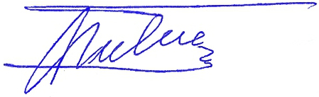

PRESENTACIÓN

Prof. Dr. José Luis Martí Tusquets.
Médico Psiquiatra, Neurocientífico.
Profesor Titular Emérito de la Universidad de Barcelona.
Presidente de la Comisión para la Nominación al Premio Nobel de la Paz al Prof. Josep de Mirandés.
¿Los Premios Nobel de la Paz, están reservados a famosos Jefes de Estado o de Gobierno, a Secretarios de Estado, o a los no menos famosos líderes políticos en la oposición de países con regímenes autocráticos?.
¿Si la verdadera Paz es el fruto de la Justicia, la Libertad, la Solidaridad y la Fraternidad entre los hombres y los pueblos de la tierra; si la Paz Social es el más preciado fruto de la inteligencia y máximo exponente de la dignidad humana, por qué no pensar también en quienes, de ese pueblo llano, ajenos a ambiciones político-partidistas hacen de su vida un permanente acto de solidaridad, de entrega a la dignidad de los demás, sabiendo que son los más necesitados e ignorados o despreciados, y hasta alcanzar el heroísmo?.
Porque, el heroísmo es la entrega total y el servicio permanente a los que más sufren. No es tanto un acto llamativo y puntual, que todos podemos realizar en un momento dado, casi como un acto reflejo. El verdadero heroísmo es, cuando de manera consciente, voluntaria, y total, hacemos de la propia vida un acto permanente de servicio y entrega, y lo mantenemos en la adversidad extrema, sabiendo que te hallas a riesgo constante de la propia existencia.
Cuantos constituimos esta Comisión hemos hallado este referente, de impecable trayectoria en el Profesor de Educación Primaria, Profesor de Educación Secundaria, después, y Profesor Universitario, Josep de Mirandés i Grabolosa.
Queremos destacar, en primer lugar, su intensa lucha, -en la década de los 70 y 80-, por apartar del riesgo de muerte a miles de adolescentes y jóvenes enganchados en la droga, creando y dirigiendo una amplísima red terapéutica de drogodependencias, con centros médicos y psicológicos en todas las provincias españolas, para su desintoxicación física. También creando y coordinando una amplia red de centros de deshabituación psíquica con comunidades terapéuticas, en apartadas zonas rurales, algunas incluso con formación profesional, y todas con programas de reinserción social.
También su lucha contra el narcotráfico internacional, que en íntima conexión y colaboración con el Inspector Fiscal de la Fiscalía General del Estado, D. Eugenio López y López, por una parte, le llevó a que, se consiguieran importantes aprehensiones de cargamentos enteros antes de su desembarco, pero, por otra parte, a la cruel, y terrible lucha a muerte que le declararon los potentes intereses creados que hay tras el narcotráfico.
Semana Santa de 1987. Ilegalmente detenido, vilmente torturado, gravemente calumniado, por los potentes intereses creados del narcotráfico, salvó su vida, hecho prisionero y agonizando, gracias a la intervención heroica de un policía honesto, cuando muchos jóvenes perdían la vida, en aquel espantoso montaje policial, que bien se puede calificar de terrorismo policial.
Para dar a conocer su singular y heroica trayectoria, su sufrimiento y su entereza, utilizaremos, en primer lugar, el amplio, documentado y espeluznante reportaje de la Revista JUZGADO DE GUARDIA Nº 1, de la Asociación Catalana Contra la Injusticia y la Corrupción, editado en 1992.
Varias de sus partes resultan esenciales:
En primer lugar, la portada de la Revista, que reproduce la obra “La Transición Pendiente”.
En la parte central de la obra aparecen representados los referidos y trágicos sucesos. Se hallan enmarcados en la primera transición, hacia la democracia, pero hacia una democracia imperfecta, llena de corrupciones y corruptelas. Muchos paises hemos podido superar la dictadura, representada en la parte inferior de la obra.
Pero, no debimos quedar en situación intermedia, de democracia imperfecta, sino avanzar hacia la parte superior de la obra, que representa la democracia real o democracia humana: La transición pendiente.
ACCESO A LA PORTADA (Obra “LA TRANSICIÓN PENDIENTE”)
En segunado lugar: el REPORTAJE LA TRANSICIÓN PENDIENTE, que va explicando la obra en todos sus detalles, y con especial referencia a la destrucción de la Coordinadora Nacional de la Lucha Antidroga.
ACCESO AL REPORTAJE “LA TRANSICIÓN PENDIENTE”
En tercer lugar: el CAPÍTULO 4º del amplio reportaje “Corrupción en la Policía”. Este Capítulo 4º (desde la pág. 32 hasta la 66), a través de la carta que el Dr. Carlos Obregón, (Dr. En Derecho, Perito Judicial y Presidente de la Asociación Catalana contra la Injusticia y la Corrupción), dirigió al Juez Baltasar Garzón de la Audiencia Nacional, y que va narrando los hechos a que nos hemos referido, y acompañando todos los documentos.
Finalmente: La Revista Juzgado de Guardia Nº 1, completa, que contiene el amplio reportaje “CORRUPCIÓN EN LA POLICÍA” (desde la pág. 16 hasta la 85). Este reportaje permite comprender el contexto inmediato en el que se produjo el cruel montaje.
Muchos jóvenes murieron. Médicos y psicólogos de toda España que colaboraban altruistamente fueron objeto de torturas psíquicas. El heroico policía Marcelo Lorenzo Flames logró salvar la vida del Prof. Josep de Mirandés, cuando hecho prisionero estaba agonizando.
Mas tarde, la Justicia, mediante el primer Sobreseimiento, estableció la completa falsedad de todas las acusaciones que contra el Prof. Josep de Mirandés habían vertido y publicado ampliamente, pero esto no ocurrió hasta cinco años y medio de sufrimiento, y tuvieron que transcurrir otros dos años y medio más, para el segundo Sobreseimiento, cuando los delitos de injurias y calumnias gravísimas que habían vertido contra el Prof. Josep de Mirandés ya habían prescrito.
(Ambos sobreseimientos constituyen el Sobreseimiento Libre, al haberse demostrado la inexistencia de delito o falta. Cosa Juzgada).
Las secuelas diagnosticadas, como es natural, fueron muy graves.
El Prof. Josep de Mirandés, que a tantos miles de jóvenes enganchados en la droga había ayudado a recuperar su salud, y a apostar fuerte por la vida, potenciando su fuerza de voluntad, con fuerte motivación y tenacidad en los tratamientos, se hallaba, ahora, ante su propio reto personal.
Después de varios años, como el Ave Fénix el Prof. Josep de Mirandés venció la enfermedad. Se reincorporó a la docencia como Profesor Universitario, y a sus tareas como investigador científico.
En mí dilatada vida nada he realizado con mayor orgullo, esperanza y convicción que presentar la trayectoria de la vida ejemplar y equilibrada personalidad del Prof. José de Mirandés: un héroe de nuestro tiempo, para que los jóvenes de hoy puedan de su ejemplo crear un mundo mejor.

Dr. José Luis Martí Tusquets.
Médico Psiquiatra, Neurocientífico.
Profesor Titular Emérito de la Universidad de Barcelona.
Presidente de la Comisión para la Nominación al Nobel de la Paz al Prof. Josep de Mirandés
VER CURRÍCULO PROFESIONAL DEL Dr: JOSÉ LUIS MARTÍ TUSQUETS
Dr. Juan Luis Miranda Romero.
Médico Psiquiatra Perito Judicial, Neurocientífico.
Profesor Universitario.
Presidente del Consejo Superior de Expertos en Altas Capacidades.
Vicepresidente de la Comisión para la Nominación al Nobel de la Paz al Prof. Josep de Mirandés
El Prof. Josep de Mirandés había observado el profundo sufrimiento de muchos niños, adolescentes y jóvenes que se rompían en las aulas, consecuencia de sus cocientes intelectuales inusualmente altos. Consecuencia también del desconocimiento de muchos maestros y profesores, de las rigideces de los sistemas educativos y de las mentes de muchos funcionarios de la educación. También de la desidia y la ignorancia de muchos políticos. Decidió luchar por estos niños y jóvenes. Promovió la creación de instituciones especializadas, centros de diagnóstico, asociaciones de padres, investigaciones científicas, la formación específica de los docentes, y de los profesionales, iniciativas legislativas, la divulgación y concienciación social. (Incorporamos en este espacio web una pequeña muestra de sus trabajos).
En el año 2.000 fue elegido Presidente de la Asociación de Padres y de Niños Superdotados de Cataluña. En el 2.003 fue elegido Presidente de la Confederación Española de Asociaciones de Altas Capacidades. En el 2005, Secretario General del Consejo Superior de Expertos en Altas Capacidades, y presidente del Instituto Internacional de Altas Capacidades, impulsando el nuevo paradigma de la educación, desde la perspectiva del modelo de escuela inclusiva, orientado a la educación de calidad para todos.
En su condición de Presidente de la Confederación Española de Asociaciones de Altas Capacidades, el Prof. Josep de Mirandés reunió todas las propuestas de todas las asociaciones de padres, centros especializados y de los expertos, y luchó (sin pertenecer a partido político alguno y únicamente desde su posición científica), hasta conseguir que todas ellas fueran aceptadas mayoritariamente por la inmensa mayoría de los grupos parlamentarios e incorporadas en la nueva y actual Ley Orgánica de Educación (LOE).
En los últimos años, el Prof. De Mirandés ha impartido centenares de conferencias en colegios y universidades, cursos oficiales e intervenciones parlamentarias. En el 2008, fue nombrado Coordinador del Curso del Ministerio de Educación: “La Educación de los Alumnos de Altas Capacidades”, para los maestros y profesores. Pero, el intenso y largo sufrimiento que padeció durante aquellos largos años, no hay persona que pueda verse ajena de sus demoledores efectos, pues rápidamente se inician inevitables procesos de psicosomatización que tarde o temprano aparecen en diferente forma. El cáncer es una de ellas. Así ocurre en muchos casos de otras formas de terrorismo, como en personas que fueron secuestradas y torturadas por ETA.
En agosto de 2010 en el Hospital del Mar de Barcelona, le diagnosticaron un cáncer. Desde entonces, sometido a intensa quimioterapia en el Hospital de Sant Pau, lucha intensamente por su vida, contra la cruel enfermedad, contra los terribles efectos de la quimioterapia, contra el dolor y el desmoronamiento.
Y, en los momentos en que el dolor desciende, aún sigue luchando por las niñas, niños, adolescentes y jóvenes, que por sus altas capacidades, en las escuelas. se hallan ante el riesgo para su salud mental, y que siguen siendo víctimas de la incomprensión, el desprecio y la ignorancia que todavía permanece en amplios sectores de los sistemas educativos, con la misma fuerza y convicción que en los años 80 luchaba por cuantos en sus jóvenes vidas quedaban atrapadas en la droga.
Josep es un gran reformador social. Hace muchos años, en su dedicación a su proyecto de ayuda a los toxicómanos y, actualmente, desde hace años, en su proyecto de ayuda a las niñas y niños superdotados y de altas capacidades, no se queda en la ayuda personal y directa al niño/a o joven, sino que realiza un tremendo esfuerzo para que se aplique la legislación actual al respecto y a promover cambios en la legislación.
Es una persona con sólidos fundamentos en orden a que la educación que han de recibir los alumnos de altas capacidades ha de ser “inclusiva”. Su vocación, por tanto, no se limita a la ayuda a estos niños y jóvenes, sino que se orienta a la educación de calidad para todos, es decir, en hacer de la educación un pilar fundamental de la sociedad.
La relación de sus cualidades personales y profesionales es amplia. Baste aquí señalar algunas, de ellas, como su inmensa capacidad de trabajo; su constancia inacabable; su gran empatía y capacidad de relación con las personas y con las instituciones; su fuerte espíritu de lucha; su entrega nada dubitativa a su trabajo y sentido de la responsabilidad; su sensibilidad y celo por la justicia; su gran capacidad de pensar; su serenidad y maduro equilibrio personal; su inestimable capacidad afectiva; su clarísima austeridad; su personalidad razonable; su valentía; su capacidad de juicio y su tolerancia. Su realismo y objetividad; su coherencia; su honradez fundamentada en elevados principios éticos y religiosos; su capacidad de enseñar; siempre tratando de ser justo en todas las ocasiones que le presenta la vida; su permanente esfuerzo por la excelencia, mejorando y mejorando constantemente su trabajo; su integridad a toda prueba; su eficiencia; su altruismo incondicional; su extraordinaria inteligencia; sus amplísimos conocimientos científicos y su creatividad. Muchas cualidades más.
No nos gustan los homenajes póstumos. Nuestra sociedad globalizada necesita, ahora, que los valores de estas personas excepcionales sean ampliamente conocidos y reconocidos. De forma especial los adolescentes y los jóvenes necesitan, sin demora, referentes claros e incontrovertibles, como este, para que juntos puedan construir un mundo más digno y más solidario basado en los derechos humanos. Un mundo más justo y solidario, del que pueda surgir una sociedad humana de verdadera Paz, como fundamento básico del verdadero nuevo orden mundial.
Dr. Juan Luis Miranda Romero.
Médico Psiquiatra Perito Judicial, Neurocientífico.
Profesor Universitario.
Presidente del Consejo Superior de Expertos en Altas Capacidades.
Vicepresidente de la Comisión para la Nominación al Nobel de la Paz al Prof. Josep de Mirandés
VER CURRÍCULO PROFESIONAL DEL Dr. JUAN LUIS MIRANDA
Rdo. Joan Josep Villegas i Acién.
Sacerdote. Rector de la Parroquia Sant Francesc de Pàola, de Barcelona.
Presidente de la ONG Globalización y Derechos Humanos.
Quien más quien menos habremos podido tener cierta participación altruista en alguna causa. Pero, conocer y comprobar la total entrega permanente a los fundamentos de la verdadera Paz: la Solidaridad con los que más sufren, la lucha por la Justicia, hasta el límite de la propia vida, que ha mantenido el Prof. Josep de Mirandés, causa un escalofrío de respeto, admiración y esperanza en el futuro.
También, este heroísmo en nuestro mundo actual, puede, a priori, producir cierta sorpresa, que sólo entenderemos en función de un par de claves que aparecen en esta página.
Por una parte, cuando en el reportaje "La Transición Pendiente" se le pregunta por los graves sucesos de los que fue víctima, responde: “Doy gracias a Dios porque en aquella Semana Santa de 1987 tuve la ocasión de conocer el valor del dolor humano que nos humaniza, y de poder vivirla en la profundidad de su significado. Desde entonces ni en un solo día he dejado de tener en mi mente a cada uno de aquellos chicos y chicas que, desde el abismo de la droga en que se hallaban supieron romper con ella, y apostaban por la vida con la ilusión de un mundo más solidario en las granjas terapéuticas de la Coordinadora en las que se estaban rehabilitando, y que murieron en aquel espantoso montaje policial”.
Por otra parte, en la entrevista que se publica a D. Marcelo Lorenzo Flames, el policía que salvó la vida al Prof. Josep de Mirandés, cuando agonizaba en la cárcel Modelo de Barcelona, a la pregunta si se desmoronó, y lo que hacía las prácticamente 24 horas al día que permanecía encerrado en la celda, nos explica: “En varias ocasiones le sorprendí rezando”.
Porque, en nuestro mundo globalizado los derechos humanos los puede defender hasta el heroísmo un hombre cuando parte de convicciones profundas, que permiten descubrir la razón a la existencia.
Sólo me queda expresar mi fuerte deseo de que quien por tantas vidas jóvenes ha luchado, venza en su actual lucha contra su cáncer, que mantiene en los últimos dos años, y que en su ejemplar trayectoria los adolescentes y jóvenes de hoy hallen el referente necesario para construir un mundo más solidario, más justo, más humano: un mundo de verdadera Paz.
Rdo. Joan Josep Villegas i Acién.
Sacerdote. Rector de la Parroquia Sant Francesc de Pàola, de Barcelona.
Presidente de la ONG Globalización y Derechos Humanos.
Salvador Borrás Sanchís
Psicólogo, Maestro, Logopeda y Orientador Educativo.
Coordinador General de los Centros de Diagnóstico Clínico del Instituto Internacional de Altas Capacidades.
Estimado Josep.
A lo largo de nuestras vidas encontramos personas a nuestro alrededor que se convierten en referente o modelo a seguir porque nos impactan o porque nos transmiten valores y maneras de ser. Yo tengo ese referente en unas pocas personas que por sus características me han ayudado directa o indirectamente a madurar.
En este breve pero intenso espacio de tiempo en el que te estoy conociendo, por las muestras de confianza que me das y por la aportación en sabiduría y valores que me transmites, estás siendo un gran referente para mí.
En este período discente...La corrección razonada y minuciosa de ejercicios, las conversaciones telefónicas intensas, las reflexiones tanto académicas como personales, la discusión siempre argumentada con referentes científicos, una escucha atenta, consejos útiles... este es el profesor Josep.
Por todo esto Josep he de agradecerte todo lo que estás haciendo y permíteme que te muestre mi más profundo respeto y consideración.
En esta página Web de amigos del profesor Josep de Mirandés hay testimonios y hechos que "ponen los pelos de punta" y son muestra de la realidad de la sociedad que tenemos en la que héroes como Josep luchan y se rebelan contra la injusticia, Pienso que estará bien que todos los compañeros vayan conociendo la altura y el valor del profesor que tanto nos ayuda.
Sólo espero y confío en que la salud te respete y acompañe para que sigas aportando tu sabiduría, carisma e ilusión a todos nosotros.
Desde Ontinyent te mando un fuerte abrazo y mi compromiso en la lucha por conseguir nuestros objetivos educativos.
Gracias por todo.
Salvador Borràs Sanchis
Psicólogo, Maestro, Logopeda y Orientador Educativo
Coordinador General de los Centros de Diagnóstico Clínico
del Instituto Internacional de Altas Capacidades.

1.– EL PROF. JOSEP DE MIRANDÉS CREÓ LA RED TERAPÉUTICA DE DROGODEPENDENCIAS, CON CENTROS MÉDICOS Y PSICOLÓGICOS EN TODAS LAS PROVINCIAS ESPAÑOLAS. TODOS ESTOS EXTRAORDINARIOS PROFE-SIONALES FUERON SOMETIDOS A TORTURAS PSÍQUICAS.

Médicos y Psicólogos de la Red Terapéutica de Drogodependencias de todas las provincias españolas, colaboraban ayudando altruistamente a los chicos y chicas enganchados en la droga, que habían decidido apostar por la salud y por la vida.
Muchos Médicos y Psicólogos sucumbieron a las
torturas psíquicas a que fueron sometidos. El Delegado de la
Coordinadora Nacional de la Lucha Antidroga en La Línea de la
Concepción el Psicólogo D. Manuel Vázquez García, pudo resistir. Se
trata de un profesional muy ducho en psicoterapia de grupo.
Escribió una carta al Prof. De Mirandés explicándole su experiencia. La resume así: “En definitiva y resumiendo, hora y media que hubieran bastado para desquiciar a cualquier persona poco ducha en psicoterapia de grupo”.
2.– LOS MEDIOS DE COMUNICACIÓN COLABORABAN ACTIVAMENTE. CON LA COORDINADORA NACIONAL DE LA LUCHA ANTIDROGA. MIENTRAS, CRECÍAN LAS CORRUPCIONES DEL ESTADO EN TORNO DE LA DROGA
Los periódicos de toda España colaboraban insertando llamamientos para que todos los jóvenes atrapados en la droga tuvieran una esperanza de curación en su propia provincia. Más allá del criminal montaje policial de abril de 1987 diarios de la llamada prensa nacional como el ABC o la prensa de provincias como El Comercio de Gijón continuaron colaborando.
Mientras, seguía creciendo la corrupción en el aparato del Estado en torno a la droga, como denunció el Magistrado Juez de la Audiencia de Madrid S.Sª Joaquín Navarro Estevan.
3.– PUBLICACIONES DE LA COORDINADORA NACIONAL DE LA LUCHA ANTIDROGA

La Coordinadora Nacional de la Lucha Antidroga, además de la gran labor de curación: desintoxicación física, deshabituación psíquica y reinserción social, mediante la amplia Red Terapéutica de Drogodependencias, con centros médico-psicológicos en todas las provincias de España, además de la intensa lucha contra el narcotráfico internacional, realizó una amplia labor de información y concienciación social mediante diferentes publicaciones: la Revista ANTIDROGA y las Separatas ANTIDROGA. También de prevención, para los niños y adolescentes: cuadernos para pintar dirigidos a los niños de 4 a 8 años y comics para chicos y chicas a partir de 9 años, con la colaboración de la DEA Norteamericana y la Embajada de EEUU en España..
4.– GUERRA A LOS NARCOTRAFICANTES
El Prof. Josep de Mirandés había creado la Coordinadora Nacional de la
Lucha Antidroga con una red de centros médicos y psicológicos en todas las
provincias españolas y una red de granjas terapéuticas.
Además, después creó una amplia
red de informadores en Marruecos, Laos, Tailandia, Colombia, y
Venezuela, que le informaban de los cargamentos de droga que salían.
Remitia toda la información al Inspector Fiscal de la Fiscalía General del Estado D. Eugenio López y López.
Por otra parte, para obtener información del narcotráfico interior creó un sistema de denuncias anónimas, a través de un apartado de correos. Mediante este sistema, que entre otros medios se difundía a página entera en la Revista ANTIDROGA, obtenía la colaboración de los ciudadanos, sin necesidad de identificarse.
5.– EL PROF. JOSEP DE MIRANDÉS EN SU LUCHA CONTRA LA DROGA, ERRADICÓ UNA PARTE DEL NARCOTRÁFICO
Así lo manifestaba el Inspector Fiscal de la Fiscalía General del Estado D. Eugenio López y López, que al mismo tiempo presidía la Unión Española de Asociaciones de Asistencia al Toxicómano.
El Prof. Josep de Mirandés le remitia los informes del narcotráfico por correo certificado, que previamente le había transmitido telefónicamente.
En su respuesta el Inspector Fiscal de la Fiscalía General del Estado le agradecía y reconocía el trabajo realizado de “erradicar una parte del tráfico de droga.”.
(Es de observar que los informes del narcotráfico, el Prof. Josep de Mirandés los remitía al Inspector Fiscal de la Fiscalía General del Estado, a su domicilio particular, calle Eloy Gonzalo Nº 4, pues le había advertido: “A la Fiscalía General del Estado no me envíes nunca nada, pues de allí no sé de quien puedo fiarme”)
6.– LA COLABORACIÓN DEL
DR. MUSONS.
Se reunía con frecuencia en Madrid con el Inspector Jefe de Control de Estupefacientes del Estado Español Dr. Jacinto Musons Ginesta en su despacho del Ministerio de Sanidad en Principe de Bergara 54.
El personal a cargo del Dr. Musons recortaba las informaciones de la prensa nacional sobre los cargamentos de droga que Policía y Guardia Civil, capturaban, cuyos cargamentos debían integramente entregar al Dr. Musons que procedía a quemarla. No le llegaba ni el 10% de la droga capturada.
El Dr. Musons abandonó su cargo oficial, en el Ministerio, y se trasladó a Barcelona, donde pasó a ser el brazo derecho del Prof. de Mirandés en la lucha contra el narcotráfico y en la Revista Antidroga.
El Dr Jacinto Musons, ya integrado en el equipo directivo de profesionales de la Coordinadora Nacional de Lucha Antidroga.
7.– "CONDENADOS" A MUERTE POR EL NARCOTRÁFICO INTERNACIONAL
Desde finales de 1983, principios de 1984 se sabía que los narcotraficantes habían "sentenciado a muerte" a dos grandes luchadores contra la droga: el Ministro de Justicia de Colombia, Abogado Rodrigo Lara Bonilla y su amigo el Presidente de la Coordinadora Nacional de la Lucha Antidroga, el Prof. Josep de Mirandés Grabolosa.
Rodrigo Lara Bonilla fue ametrallado en las calles de Bogotá el 30 de abril del 84 y tres meses después también asesinarón al Juez Manuel Castro que investigaba el asesinato de Rodrigo Lara Bonilla.
La amplia reacción social que a nivel mundial despertaron estos asesinatos provocó en los narcotraficantes un cambio de estrategia. Convertir en mártires a estos héroes de la lucha antidroga no les resultaba beneficioso. La nueva estrategia pasó a ser, en primer lugar, destruir el prestigio y dignidad, con la mentira y la calumnia. Los medios de comunicación pasaron a ser la primera herramienta a utilizar.
8.– CÓMO UN GRUPO DE POLICÍAS AL MANDO DEL COMISARIO JEFE DE LA POLICÍA JUDICIAL DE BARCELONA; JUSTO AGUILERA, CONSIGUIERON DESTRUIR LA OBRA DE LA COORDINADORA NACIONAL DE LA LUCHA ANTIDROGA. EL CRUEL MONTAJE EN EL QUE MURIERON MUCHOS JÓVENES. EL ASESINATO FRUSTRADO EN EL ÚLTIMO MOMENTO DE SU FUNDADOR Y PRESI- DENTE EL PROF. JOSEP DE MIRANDÉS.
Nos lo explica D. Carlos Obregón, Doctor en Derecho, Profesor Universitario Titular, Perito Judicial, Presidente de la Asociación Catalana contra la Injusticia y la Corrupción.
9.– COMPRANDO TESTIGOS FALSOS. BUSCABAN ALGO PARA PODER INCULPAR AL PROF JOSEP DE MIRANDÉS. NO PUDIERON ENCONTRAR NADA. ENTONCES OFRECIERON CANTIDADES DE DINERO A ALGUNOS DE SUS COLABORADORES PARA PODER OBTENER TESTIGOS FALSOS. TAMPOCO LO CONSIGUIERON.

El valiente y honrado empresario barcelonés D. José Martorell Soto, lejos de aceptar el suculento ofrecimiento, fue a dar su testimonio al Presidente de la Audiencia de Barcelona, D. Carlos Amigó de Bonet.
(A José Martorell Soto no le pudieron corromper. Era un hombre singular, forjado en la lucha cuerpo a cuerpo por la libertad. Este español nacido en Sabadell había fundado y liderado el ERP "Ejército Revolucionario del Pueblo", en Uruguay; la inmensa mayoría de sus hombres habían sido asesinados en su lucha por la ibertad, por la justicia y por la paz.)
10.– CÓMO EL POLICÍA MARCELO LORENZO FLAMES SALVÓ LA VIDA DEL PROF. JOSEP DE MIRANDÉS, AGONIZANDO EN LA CÁRCEL MODELO DE BARCELONA.
Fueron a detener ilegalmente al Prof. Josep de Mirandes el 8 de abril de 1987, es decir, 72 horas antes de que se iniciaran las vacaciones de Semana Santa, para torturarle en los infrahumanos calabozos de Jefatura Superior de Policía de Barcelona aquellas 72 horas. A su término le llevaron al juez de guardia que se inhibió, pues aquellos policías sólo con un falso atestado y sin que hubieran conseguido ninguna acusación, habían hecho abrir diligencias previas en el juzgado que previamente habían elegido, y que sabían que el juez aquel día, Domingo de Ramos, se iría 15 días de vacaciones, por lo que tuvo que esperar su regreso en la cárcel Modelo de Barcelona.
En la prisión Modelo, tuvo lugar el frustrado atentado, del que el
valiente Policía que le salvó la vida, D. Marcelo Lorenzo Flames,
ofrece aquí detallado testimonio.
Otra “coincidencia”: policías honestos habían culminando una operación contra el narcotráfico. Aquel mismo día estaba previsto ingresar a los narcotraficantes capturados en la misma cárcel Modelo, como así fue, para que ellos mismos “se encargaran” de nuestro héroe.
El Prof. Josep de Mirandés sabía que tenían este "plan B". Logró hablar con el director de la prisión que comprendió lo que ocurría. Le dio el régimen de “superprotegido”, por lo que permaneció encerrado 24 horas al dia sin poder salir de su celda, con el policía Marcelo Lorenzo.
El mismo Policía D. Marcelo Lorenzo Flames, tras salvar la vida del Prof. Josep de Mirandés, el 13 de julio de 1987 dirigió una carta-testimonio al Magistrado-Juez José Mª Miquel Porres, explicando con detalle cómo lo hizo para conseguir salvarle la vida.
Mas tarde, la revista Juzgado de Guardia entrevistó al policía D. Marcelo Lorenzo Flames.
11.– ASALTARON EL BUFETE DEL LETRADO DEL PROF. JOSEP DE MIRANDÉS, D. CARLOS OBREGÓN, EN SEIS OCASIONES. NO ROBABAN NADA DE VALOR SÓLO DOCUMENTOS.
Así lo publicó la Vanguardia en su edición de 1 de octubre de 1991.
ACCESO A LA INFORMACIÓN DE LA VANGUARDIA.
La esposa del Letrado Dr. Carlos Obregón, la también Letrada Dª Adela Vázquez Lluch, el 3 de octubre de 1991, como en los anteriores asaltos, acudió a interponer la denuncia a la Policía. A la pregunta del Oficial de Policía que le tomaba la denuncia “¿Sospechan de alguien?”, respondió, y así se hizo constar en la denuncia: “…el motivo por el que entran es debido a que tramitan un caso en el cual presuntamente se encuentran implicados JUECES, LETRADOS Y POLICÍAS”
Asimismo hizo constar que la solicitud de protección solicitada al Gobierno no estaba siendo atendida.
ACCESO AL ESCRITO DE DENUNCIA.
Cada asalto al bufete del Letrado Dr. Carlos Obregón y sede de la Asociación Catalana contra la Injusticia y la Corrupción, (ACINCO), producía en todos un fuertísimo impacto psíquico. Al Abogado D. Carlos Obregón le producían, además, derrames cerebrales, consecuencia de ellos y tras el sexto asalto este extraordinario luchador contra la injusticia y la corrupción, murió.
En el décimo aniversario de su fallecimiento el Colegio de Abogados de Barcelona le dedicó un merecidísimo homenaje, como no podía ser menos.
12.– LA CARTA QUE EL LETRADO Dr. CARLOS OBREGÓN DIRIGIÓ AL MAGISTRADO JUEZ DE LA AUDIENCIA NACIONAL BALTASAR GARZÓN.
El 7 de octubre de 1991 D. Carlos Obregón, dirigió esta Carta al Magistrado Juez de la Audiencia Nacional, D. Baltasar Garzón, en la que le explica y le documenta las criminales actuaciones de los intereses creados del narcotráfico en la destrucción de la Coordinadora Nacional de la Lucha Antidroga. La tortura a su fundador y presidente, el Prof. Josep de Mirandés. Le pone el tema en sus manos.
13.– LA AUDITORÍA ORDENADA POR EL JUEZ
A DOS PERITOS CENSORES JURADOS DE CUENTAS, PUSO DE MANIFIESTO LA CRIMINAL FALSEDAD DEL MONTAGE POLICIAL.
EL PROF. JOSEP DE MIRANDÉS HABÍA APORTADO MAS DE
DOCE MILLONES DE SUS AHORROS PERSONALES.
EL Jefe de la Policía Judicial de Barcelona, Justo Aguilera Fernández, para detener y difamar al Prof. Josep de Mirandés, se inventó que había estafado doce millones a la Coordinadora Nacional de la Lucha Antidroga que había creado y que presidía. Con esta gravísima calumnia, en el momento en que, indefeso, lo hizo ingresar en prisión, hizo llegar a todos los medios de comunicación una nota de prensa, divulgando al máximo tal columnia. Al provenir de la Jefatura Superior de Policía, todos los medios la publicaron sin comprobación.
Ilegalmente detenido, no pudo defenderse, y al recuperar la libertad ya había vencido el plazo legal para ejercer el derecho de réplica.
El Policía Justo Aguilera había preparado un voluminosísimo atestado, lleno de falsedades y gravísimas, calumnias, y lo llevó al juzgado con lo que le abrieron Diligencias Previas.
El Prof. Josep de Mirandés pidió al Juez que nombrara a dos Peritos Censores de Cuentas y les ordenara la realización de una exhaustiva auditoria que duró cinco años.
La auditoría ordenada por el Juzgado demostró, por una parte, que no faltaba un solo céntimo, pues la totalidad de los ingresos estaban debidamente aplicados a los fines de la Institución, y sin que existiera desviación alguna, (Conclusión final Quinta) por otra parte que el Prof. Josep de Mirandés era quien de sus molestos ahorros personales iba aportando fondos para crear y mantener toda la obra, y que estos ascendían a más de doce millones. (Conclusión final Sexta)
ACCESO A LA AUDITORIA ORDENADA POR EL JUEZ: CONCLUSIONES FINALES QUINTA Y SEXTA.
14.– A PARTIR DE 1991 DIFENTES INVESTIGACIONES PERIODÍSTICAS COMENZARON A DESCUBRIR NOMBRES DE POLICÍAS y JUECES…. DIARIO DE BARCELONA PUBLICA UN REPORTAJE SOBRE COMPLICIDADES Y EVASIONES DE CAPITALES DEL NARCOTRÁFICO.
Comienza a aparecer, en las investigaciones periodísticas, el nombre del Comisario de la Policía Judicial de Barcelona Justo Aguilera Fernández, vinculado a una red de evasiones de capitales: “Si el total evadido era inferior a 200 millones, la escolta correspondía a los funcionarios de policía Justo Aguilera Fernández…”
ACCESO AL REPORTAJE DE DIARIO DE BARCELONA. 9 DE SEPTIEMBRE DE 1991.
Diario de Barcelona en su reportaje de de 20 de julio de 1992 incidía en el tema.
El semanario El Triangle de 27 de septiembre de 1992 daba cuenta de la querella criminal presentada contra estos mismos individuos.
15.– EL COMISARIO JEFE DE LA POLICÍA JUDICIAL DE BARCELONA JUSTO AGUILERA FERNÁNDEZ FUE DESTITUIDO Y DEGRADADO A UNA COMISARÍA DE BARRIO.
Diario de Barcelona en su edición de 28 de septiembre de 1992, también daba cuenta de ello, indicando: “El Ex-Comisario Jefe de la Brigada Provincial de la Policía Judicial de Barcelona Justo Aguilera, destituido de su cargo recientemente, se halla implicado en una red de evasión de capitales, entre otras irregularidades”
“Según ACINCO, el policía ha hecho detenciones injustificadas teniendo el convencimiento que, posteriormente, el juez de guardia dejará en libertad al detenido. En este sentido cita el caso del director (presidente) de la Coordinadora Nacional de la Lucha Antidroga , José de Mirandés, porque investigaba redes de narcotráfico en las cuales, según ACINCO estaba involucrado el comisario”.
ACCESO AL REPORTAJE DE DIARIO DE BARCELONA DE 28 DE SEPTIEMBRE DE 1992 (original en catalán)
16.- SOBRESEIMIENTO LIBRE.
Cuando se ha demostrado que una persona ha sido víctima de falsas imputaciones de delitos o faltas, que ni siquiera han existido, la Justicia dicta Auto de Sobreseimiento Libre (Cosa Juzgada).
Así fue como acabaron las falsas acusaciones de que fue víctima el Prof. Josep de Mirandés, y que aquellos policías difundieron a todos los medios de comunicación.
Pero, fue tras ocho años de sufrimiento, cuando los delitos de calumnias gravísimas contra él ya habían prescrito, y, cuando había psicosomatizado tanto sufrimiento en un cáncer, contra el que sigue luchando.
ACCESO A LOS DOS AUTOS JUDICIALES QUE CONSTITUYEN EL OBRESEIMIENTO LIBRE
17.– EL PROF. JOSEP DE MIRANDÉS, TENÍA CONOCIMIENTO DE QUE LE PREPARABAN UNA CAMPAÑA DE CALUMNIAS, A TRAVÉS DE TODOS LOS MEDIOS DE COMUNICACIÓN, PARA DESTRUIR LA OBRA DESTRUYENDO SU IMAGEN Y DIGNIDAD; QUE SERÍA BRUTALMENTE TORTURADO; QUE ATENTARÍAN CONTRA SU VIDA. ¿QUÉ HIZO?.
Cuando llegó su hora, (principios del 87), el Prof. Josep de Mirandés lo sabía perfectamente, pues había recibido muchas amenazas, que se intensificaron cuando a su intenso trabajo de curación e inserción social, añadió la lucha directa contra el narcotráfico.
Escribió el artículo: “LA MAFIA DE LA DROGA”. En su apartado: “Destruir la dignidad y el prestigio”, decía, entre otras cosas: “Ahora se recrudece la campaña llamando a muchos de ellos, sometiéndoles a diálogos intimidatorios, realmente kafkianos, con mentiras, difamaciones, etc.…., con el objetivo , al parecer , de que desistan de su actividad de curación de toxicómanos” “La lucha es dura. Es un pulso incierto. Obviamente, recuperar para la sociedad a los jóvenes que han caído en la trampa de la droga, con escasez de medios, y al mismo tiempo hacer frente a estas embestidas, no es tarea fácil. El riesgo es evidente. Incluso físico, aunque no inminente, en la medida en que a las mafias de la droga ya no les interesa. No les favorece crear más héroes de la lucha antidroga. Les resulta más eficaz conseguir el desmoronamiento psíquico, y la destrucción del prestigio, de la dignidad. Por esto amenazan a la Coordinadora de la Lucha Antidroga con campañas de prensa, mediante la mentira, la calumnia, la injuria. Buscan el escándalo. Cuentan con la fuerza del dinero y hasta cierto punto del poder.”
Mandó este artículo a varios periódicos. El Diario YA lo publicó en su edición de 2 de mayo de 1987.
VER EL ARTÍCULO DEL PROFESOR DE MIRANDÉS PUBLICADO EN EL DIARIO YA.
El Prof. De Mirandés sabía que estaban ofreciendo importantes sumas de dinero a sus colaboradores para que hicieran acusaciones calumniosas contra él. No lo consiguieron. El conocido empresario D. José Martorell Soto acudió al Presidente de la Audiencia Provincial de Barcelona D. Jaime Amigó de Bonet a ofrecerle su testimonio y la prueba.
Permaneció impasible en su puesto, al lado de los chicos y chicas que querían apartarse de la droga y luchar por la vida. Cuando llegó el día elegido por aquellos policías, allí le encontraron en su despacho en la sede de la Institución, atendiendo a los adolescentes, jóvenes y a sus familias.
18.– LAS GRANJAS TERAPÉUTICAS SE HALLABAN REPLETAS DE CHICOS Y CHICAS QUE HABÍAN ROTO CON LA DROGA Y APOSTADO POR LA VIDA. MUCHOS MURIERON EN AQUEL ESPANTOSO MONTAJE POLICIAL
Algunos habían sido confiados por Jueces y Tribunales de Justicia, y todos seguían con esfuerzo un programa de inserción social y de formación profesional. Se hallaban pues en una fase especialmente vulnerable en sus jóvenes vidas.
Aquellos policías a las órdenes del Jefe de la Policía Judicial de Barcelona Justo Aguilera irrumpieron brutalmente en ellas y en sus tratamientos. En “plan bestia“ les persuadieron de que investigaban una gran estafa, y que ellos estarían implicados si no colaboraban.
19.– ¿PODÍA RECUPERARSE LA OBRA DE LA COORDINADORA NACIONAL DE LA LUCHA ANTIDROGA, TRAS ESTOS CRIMINALES SUCESOS?
Lo intentó un honesto y valiente Magistrado Juez, D. José María Miquel Porres.
El 25 de Mayo de 1987 fue elegido nuevo presidente de la Coordinadora Nacional de la Lucha Antidroga. Aquel mismo día escribió una carta circular y la difundió ampliamente. En ella citó a un honesto alto mando policial, el Comisario Jefe de la Policía Nacional Sr. Rodríguez Nicolás que en un reciente programa de televisión había dicho: “Uno de los principales objetivos de los narcotraficantes, en el que dedican buena parte de de sus cuantiosos beneficios, es el de desprestigiar e intentar hundir a las entidades que luchan contra la droga”.
Seguidamente, y en relación a lo que acababa de sufrir el Prof. De Mirandés, los Médicos y Psicólogo y otros colaboradores de la Coordinadora, escribió: “Como presidente de la Coordinadora Nacional de la Lucha Antidroga me propongo ilusionadamente, consolidarla en la fundada esperanza de que además de engrandecer la magna obra social, en la que todos colaboramos, dignificaremos al propio tiempo a aquellos que, y precisamente por su total entrega a la misma, se han visto injustamente calumniados y cercenados en su honor”.
(Tuvieron que pasar cinco años para que la Justicia estableciera oficialmente que todo habían sido mentiras y calumnias de aquellos policías, -que habían utilizado los medios de comunicación para difundirlas, haciéndoles llegar una nota de prensa oficial de la Jefatura Superior de Policía-, y ocho años para el sobreseimiento libre y definitivo. Pero, para las personas honestas y bien informadas como el Magistrado Juez José Mª Miquel Porres, todo estaba muy claro en todo momento)
A pesar de la valentía y la entrega del Magistrado Juez José Mª Miquel Porres, no consiguió recuperar la magna obra. Todo lo que habían dejado aquellos policías era destrucción, desolación, calumnias y muerte.
VER LA CARTA CIRCULAR DEL MAGISTRADO JUEZ D. JOSÉ Mª MIQUEL PORRES
20.– EL PROF. JOSEP DE MIRANDÉS FUNDÓ EL INSTITUTO INTERNACIONAL PARA LA PAZ, DEL QUE FUE ELEGIDO PRESIDENTE EN 1992, CUANDO TODAVÍA LA JUSTICIA NO LE HABÍA HECHO EL SOBRESEI-MIENTO, Y SE HALLABA EN INTENSOS TRATAMIENTOS PARA RECUPERARSE DE LAS SECUELAS DE SU TORTURA.
Con el objetivo de promover la paz mundial, -el verdadero sentido de la Paz, que no es la mera ausencia de actividad bélica, sino el fruto de la Justicia, la Libertad y la Solidaridad entre las personas, los pueblos y los estados-, el Prof. Josep de Mirandés hizo un llamamiento a diferentes personalidades de prestigio internacional que gustosamente aceptaron sus planteamientos y se integraron en la Junta Consultiva del Instituto Internacional para la Paz: El Ex Presidente de la URSS Mijail Gorbachov, Su Alteza Real la Princesa Irene de Grecia (Hermana de S M la Reina de España), el científico de la NASA y de la Universidad de Houston Joan Oró, el Presidente del Comité Olímpico Internacional Juan Antonio Samaranch, el Rector de la Universidad de Barcelona José Mª Bricall, el ExMinistro de Educación y Defensor del Pueblo Joaquín Ruiz-Giménez, el Ministro de Justicia e Interior, miembro del Consejo General del Poder Judicial Juan Alberto Belloch, el Presidente de la Fundación Internacional para la Lucha Contra la Leucemia, el Tenor Josep Carreras, el Presidente de la Asociación Catalana contra la Injusticia y la Corrupción Dr. Carlos Obregón. Para el cargo de Secretario General fue designado el Letrado barcelonés Juan José Permanyer de Miquel.
PEQUEÑA MUESTRA DE ALGUNOS TRABAJOS CIENTÍFICOS DEL PROF. JOSEP DE MIRANDÉS
Prácticamente recuperado del brutal atentado que sufrió en 1987, con el inicio de siglo, se reincorporó a la docencia universitaria y a la investigación científica, llevando a cabo una serie de investigaciones científicas, muy importantes, en el área de la inteligencia humana, las altas capacidades, la superdotación, el talento y la precocidad intelectual, y específicamente acerca de la diferente forma de procesar la información y de aprender del cerebro de los alumnos superdotados. Todo ello orientado al necesario cambio educativo que los sistemas educativos deben realizar: Intervenciones parlamentarias, conferencias en diferentes universidades, trabajos de investigación. Ofrecemos algunas muestras.
DANOS TU OPINIÓN
¿Hasta qué punto, dando a conocer los valores humanos de Josep de Mirandés en su trayectoria vital, crees que se conseguiría que aflore en los ciudadanos, en el conjunto de la sociedad y en especial en los jóvenes, lo mejor de sí mismos, para poder construir una sociedad más justa y solidaria, más limpia de corrupciones, más fraternal y humana: la transición pendiente hacia el nuevo orden mundial basado en la Paz fruto de la Justicia y la Solidaridad?
Nos gustaría saber tu opinión. Los sentimientos que han despertado en ti al conocer esta historia real de nuestro tiempo. Por favor, clica aquí.